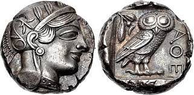
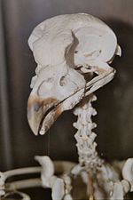

Током палеогена, дешавало се ширење реда Strigiformes у еколошке нише већ насељене другим облицима птица. У исто време су и савремени облици сова развили своје морфолошке и адаптивне карактеристике. До раног неогена, из овог реда су преостале само типичне сове и кукувије, представљене вероватно прецима данашњих родова. Специјација се десила тек након овог периода.
На граници између палеогена и неогена (пре око 25 милиона година), кукувије су биле доминантни тип сова барем у јужној Европи и суседним територијама Азије. Распрострањење фосилних и савремених линија сова указује на то, да је опадање бројности кукувија на територији Евроазије узроковано диференцијацијом и еволуцијом главних линија (родова и врста) у оквиру типичних сова. На подручју Америчких континената, разлог опадања бројности кукувија је експанзија имигрантних врста типичних сова.
